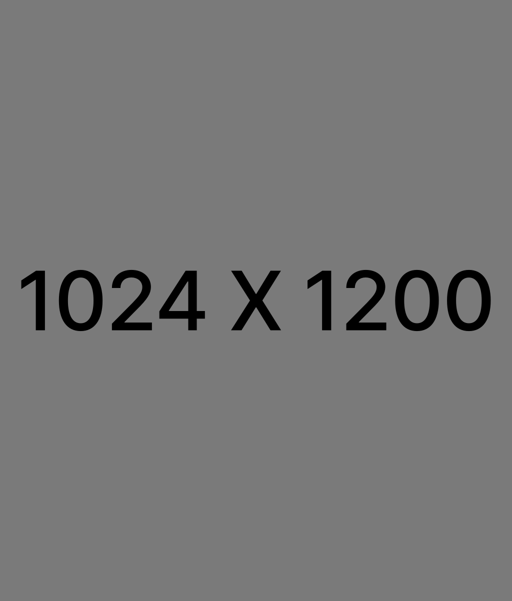
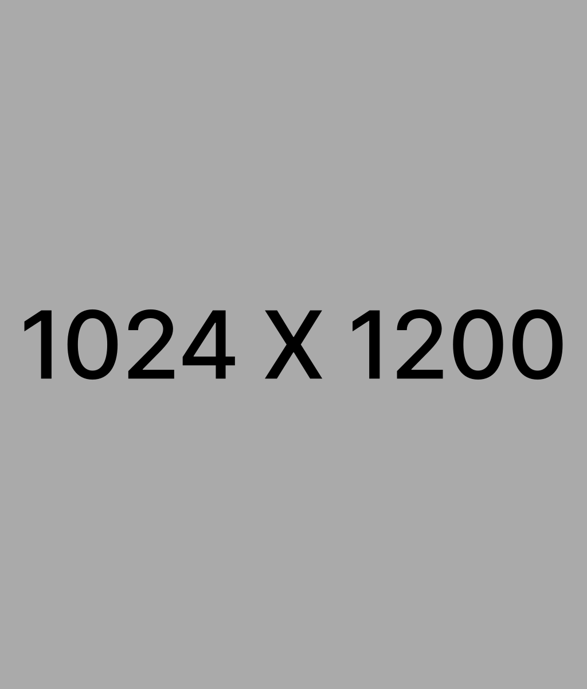

법원에서 보장하는
개인회생 탕감제도
금지명령으로 독촉·협박·압류
신청 즉시 차단!
채무의 덫에서 벗어난 분들의
실제 이야기를 확인해보세요
-
직장인 의뢰인 김XX님채무액 | 43,533,853원 탕감액 | 39,586,669원 탕감율 | 90.9% 월 변제금 | 109,644원
냉동식품 공장에 다닙니다. 성실하게만 살면 되는 줄 알았어요. 그런데 재작년 자재를 옮기다 허리디스크가 터졌고, 수술하고 몇 달 누워 있는 사이 월급이 끊겼습니다. 치료비에 생활비까지 카드로 막다 보니 빚이 어느새 4천3백만원. 복귀해도 이자도 못 갚고 돌려막던 어느 날, 중학생 딸이 "아빠 왜 자꾸 한숨 쉬어?" 묻는데, 그 말에 화장실에서 한동안 나오질 못했습니다.
그러다 아는 지인 형님이 OOOO를 권했어요. 처음엔 회생하면 월급통장도 막히고 회사에 알려져 잘리는거 아닌가 걱정했는데 OOOO에서 통장도 문제없이 그대로 쓰고 직장에도 안 알려진다고 걱정말라고하니 그제야 숨이 쉬어지드라구요. 지금은 일하면서 매달 11만원만 갚습니다. 원금 90% 넘게 덜고 3년 뒤면 끝이라, 이젠 딸 얼굴을 웃으면서 봐요. 저처럼 막막한 분들, 혼자 끙끙앓지 말고 꼭 OOOO 상담 받아보세요.

일용직 의뢰인 박XX님채무액 | 214,991,466원 탕감액 | 204,260,838원 탕감율 | 95% 월 변제금 | 298,073원막노동에 대리운전까지, 닥치는 대로 일하며 애 둘을 혼자 키웠습니다. 애들 엄마와 갈라선 뒤로 양육비 한 푼 못 받고 혼자 벌어 먹이다 보니, 월세에 학원비에 생활비가 매달 빵꾸가 났어요. 카드로 막고 대출로 메우길 몇 년, 정신 차려보니 빚이 2억을 넘겼더라고요. 일당 받아 이자 넣으면 끝, 사람 사는 게 아니었습니다. 그러다 현장 동료가 OOOO를 알려줬어요.
처음엔 빚도 못 갚는 마당에 수임료는 또 무슨 돈으로 내나, 비싸게 부르면 어쩌나 그게 제일 걸렸습니다. 근데 OOOO에서 비용이며 진행 방식 처음부터 솔직하게 다 알려주고, 형편 맞춰 낼수 있게 배려해줘서 마음 놓고 맡겼어요. 지금은 한 달에 30만원만 갚습니다. 원금 95%를 덜고 3년이면 끝이라니, 이제 애들 앞에서 한숨은 안 쉽니다. 혼자 빚에 짓눌린 분들, 망설이지 말고 OOOO 상담받고 도움받아보세요.프리랜서 의뢰인 이XX님채무액 | 198,400,709원 탕감액 | 190,792,253원 탕감율 | 87.1% 월 변제금 | 211,346원남편이 명예퇴직했을 때만 해도 이렇게까지 될 줄은 몰랐어요. 제가 화장품 영업을 뛰고 작은 식당까지 차려 메워보려 했는데, 하필 남편이 교통사고가 크게 나 수입이 아예 끊겼습니다. 병원비에 식당 적자에 생활비까지 카드 돌려막기로 버티다 보니 빚이 1억 9천만원이더라고요. 밤마다 이불 속에서 소리 죽여 울던 날이 셀 수도 없어요. 그러다 동생이 OOOO를 권했는데, 처음엔 망설였어요.
회생하면 평생 신용불량자로 낙인찍혀 카드도 대출도 영영 못 하는 거 아니냐고, 너무 무서웠거든요. 그런데 요즘은 1년만 성실히 갚으면 회생 중에도 기록이 일찍 지워져 카드도 다시 만들고 신용대출도 받을 수 있다고, 평생 가는 게 아니라고 OOOO에서 설명해줘 마음을 놓았어요. 지금은 매달 21만원씩 갚고, 원금도 87%나 덜었어요. 다시 시작할 수 있다는 희망에 요즘은 웃습니다. 저처럼 막막하신 분들, OOOO 도움받아보세요.자영업 의뢰인 정XX님채무액 | 170,634,099원 탕감액 | 158,567,511원 탕감율 | 92% 월 변제금 | 342,023원작은 김밥집을 했습니다. 목 좋다는 자리에 큰맘 먹고 차렸는데, 개업하고 얼마 안 돼 앞 도로가 공사에 들어가면서 손님이 뚝 끊겼어요. 버텨보려 대출을 받았고, 자리를 옮기면 나아질까 싶어 무리해서 이전한 게 더 큰 화근이었습니다. 인건비에 월세에 물품대금까지 돌려막다 보니 빚이 1억 7천만원. 외부 탓만 할 수도 없어요, 제 욕심이 컸으니까요. 그러다 단골 손님이 OOOO를 권해주셨어요.
처음엔 회생하면 전세보증금이며 가게 집기까지 다 뺏기는 거 아닌가 그게 제일 무서웠는데, OOOO에서 회생은 재산을 지키면서 빚을 정리하는 제도라 그대로 둘 수 있다고 짚어줘서 용기를 냈습니다. 현재는 원리금 92%나 덜고 한달에 34만원만 갚습니다. 살던 집 지키고 다시 일어설 수 있게 되니 그제야 마음이 놓입니다.사업자 의뢰인 최XX님채무액 | 421,110,943원 탕감액 | 401,793,415원 탕감율 | 85% 월 변제금 | 536,598원공단에서 작은 금속가공 공장을 했습니다. 회사 다니다 거래처 권유로 큰맘 먹고 차렸어요. 처음 몇 년은 그럭저럭 돌아갔는데, 주거래처 주문이 뚝 끊기면서 자금이 막혔고 결국 부도가 났습니다. 빚이 4억 2천만원. 공장 접고 막노동 현장을 전전했어요. 거기에 아버지까지 뇌졸중으로 쓰러지셨습니다. 공장 문 닫던 날, 텅 빈 작업장에 혼자 앉아 한참을 일어나지 못했어요.
그러다 후배가 OOOO를 알려줬습니다. 처음엔 나라 제도라는데 왜 돈 주고 맡기나, 혼자 하면 되지 싶었어요. 직접해보려니까 빚4억에 채권자도 여럿이고 서류도 복잡해 엄두가 전혀 안나더군요, 혼자 하다 회생 취소되는 분들도 많다하구요. 근데 OOOO에서 그 복잡한 걸 다 정리해 통과시켜줬습니다. 지금은 매달 54만원씩 갚고 원금 85%를 덜었어요. 이제 아버지 곁을 지키며 다시 일어설 수 있게 됐습니다. 저처럼 무너진 분들, OOOO에서 도움 받아보세요.주식·코인 의뢰인 한XX님채무액 | 426,553,096원 탕감액 | 367,793,788원 탕감율 | 85.7% 월 변제금 | 1,640,405원직장 생활을 하는 30대 후반 회사원입니다. 부끄럽지만 제 얘기를 꺼내봅니다. 몇 년 전 주식에 손을 댔다 물렸고, 손실을 만회하겠다고 대출까지 끌어 다시 투자했습니다. 반대매매로 크게 잃고도 멈추지 못한 게 화근이었어요. 정신 차려보니 빚이 4억 2천만원, 매달 이자에 월급이 통째로 들어갔습니다. 누구 탓할 수도 없는, 오롯이 제 욕심이 부른 결과였죠.
그러다 인터넷에서 OOOO를 알게 됐습니다. 처음엔 괜히 신청했다 압류라도 들어오면 어쩌나, 차라리 조용히 버티는 게 낫지 않나 한참 망설였어요. 그런데 OOOO에서, 오히려 신청하면 법원의 금지명령으로 추심과 압류가 멈춘다고 차분히 설명해줘 그제야 결심했습니다. 원금이 85%나 줄어서 너무나 감사했고, 매월 164만원씩 성실히 갚고 있습니다. 빚에 짓눌리던 마음이 가벼워지니 이제야 웃을힘이 나네요, 혼자 버티며 망설이는 분들, OOOO에서 꼭 도움받아보세요 추천합니다.도박 의뢰인 윤XX님채무액 | 84,549,976원 탕감액 | 68,987,908원 탕감율 | 82% 월 변제금 | 433,113원사회 첫 직장을 잡은 지 얼마 안 된 스물아홉입니다. 조심스럽지만 용기 내어 적어봅니다. 부끄럽게도 코인이랑 온라인 도박에 빠져 대출받은 돈을 거의 다 날렸어요. 잃은 걸 메우려고 또 빌리다 빚이 8천4백만원이 됐습니다. 월급을 받아도 이자로 다 빠져 숨이 막혔고, 무엇보다 이 사실을 가족이 알까 봐 매일이 조마조마했어요. 그러다 친구가 OOOO를 조심스레 권해줬습니다.
처음엔 가족한테 알려지면 어쩌나, 부모님이 예전에 보증 선 것 때문에 빚이 넘어가는 건 아닌가 그게 제일 무서웠어요. 그런데 OOOO에서, 회생은 가족이나 직장에 따로 통보되지 않아 조용히 진행할 수 있고, 보증 부분도 제 상황에 맞게 하나하나 짚어줘서 막연한 불안이 사라졌습니다. 다행히도 요즘은 43만원씩 갚고있는데 원금은 82%나 덜었어요. 혼자 끙끙 앓던 시간이 거짓말처럼 가벼워졌습니다. 저처럼 혼자 두려워하는 분들, 조심스럽지만 OOOO 도움 받아보시길 권해요.사기피해 의뢰인 장XX님채무액 | 390,855,017원 탕감액 | 378,047,045원 탕감율 | 94.5% 월 변제금 | 355,777원직장 다니는 40대 가장입니다. 지금도 생각하면 분이 풀리질 않아요. 주식 리딩방에서 전문가라는 사람이 종목을 찍어줬는데, 처음 몇 번은 수익이 나는 듯 보였습니다. 그 말을 믿고 대출까지 받아 넣었는데, 어느 날 채팅방이 통째로 사라졌어요. 사기였던 겁니다. 한순간에 3억 9천만원이 빚으로 남았고, 제 잘못도 아닌데 왜 내가 떠안아야 하나 억울해 잠도 못 잤습니다.
그러다 인터넷에서 OOOO를 알게 됐어요. 사기로 크게 당하고 나니, 여기도 돈받고 사라지는 건 아닌가 겁부터 났습니다. 근데 OOOO에선 상담도 2시간 넘게 했는데 무료였고, 수임료도 제 형편에 맞춰 내게 해주셔서 마음 놓고 맡겼습니다. 그덕에 지금은 무리없이 36만원씩 갚고있네요. 원금은 94%나 줄었구요. 사기로 무너졌던 일상이 제자리를 찾고있습니다. 저처럼 억울하게 빚을 떠안은 분들, 혼자 삭이지 말고 OOOO에서 꼭 상담받아보세요. 혼자만 갇혀있으면 힘들고 막막한데, 주위를 둘러보면 항상 도움의 손길을 뻗고있는 누군가가 있습니다. 힘내세요.개인정보취급방침개인정보의 수집 및 이용 동의(필수)
1. 수집하는 개인정보의 항목 및 수집 목적
(1) 개인정보 수집목적
리코코퍼레이션은 이용자의 개인정보를 다음과 같은 목적으로 수집∙이용합니다.
가. 회원으로 가입한 이용자를 식별하고 가입의사 및 나이 확인, 불량회원의 부정한 이용을 방지하기 위하여 사용합니다.
나. 이용자에게 리코코퍼레이션의 다양한 서비스를 제공하고 서비스 이용 과정에서 이용자의 문의사항이나 불만을 처리하고 공지사항 등을 전달하기 위해 사용합니다.
다. 이용자와 약속한 서비스를 제공하고 유료 서비스 구매 및 이용이 이루어지는 경우 이에 따른 요금 정산을 위해 사용됩니다.
라. 신규 서비스가 개발되거나 이벤트 행사 시 참여기회를 알리기 위한 정보 전달 및 마케팅 및 광고 등에도 사용됩니다.
마. 이용자의 서비스 이용 기록과 접속 빈도 분석 및 서비스 이용에 대한 통계, 이를 통한 맞춤형 서비스 제공과 서비스 개선에도 사용됩니다.
바. 회사에 마케팅을 의뢰한 제3자의 광고, 상품소개 등 관련 광고문자 발송, 이벤트 행사 및 경품/쿠폰 관련 고객문의 응대에도 사용됩니다.
(2) 수집하는 개인정보의 항목
회사는 회원(또는 서비스) 가입, 원활한 고객상담, 각종 서비스의 제공 등을 위해 아래와 같은 최소한의 개인정보를 필수항목으로 수집하고 있습니다.
가. 개인회원 가입시
휴대전화번호, 이름, 이메일 주소가 수집될 수 있습니다.
나. 광고서비스 제공 시
이름, 휴대폰 전화번호, 이메일이 수집될 수 있습니다.
다. 상담 서비스 이용 시
서비스 품질 확인 및 개선을 위해 연락처 정보(발/수신 전화번호), 서비스 이용 기록(통화시간, 통화 내용 등)이 수집될 수 있습니다.
라. 기타
서비스 이용과정에서 아래와 같은 정보들이 자동으로 생성되어 수집될 수 있습니다.
IP Address, 쿠키, 방문 일시, 서비스 이용 기록, 불량 이용 기록, 기기정보
2. 개인정보 수집방법
- 회사는 다음과 같은 방법으로 개인정보를 수집합니다.
- 서비스 내 관련 페이지, 서면 양식, 팩스, 전화, 상담 게시판, 이메일, 이벤트 응모
- 협력회사 및 수탁자로부터의 제공
- 회사의 이벤트 안내 팝업 내 이용자가 직접 입력한 정보 수집
3. 개인정보의 보유 및 이용기간
리코코퍼레이션은 이용자의 개인정보를 회원가입을 하는 시점부터 서비스를 제공하는 기간 동안에만 제한적으로 이용하고 있습니다.
이용자가 회원탈퇴를 요청하거나 제공한 개인정보의 수집 및 이용에 대한 동의를 철회하는 경우, 또는 수집 및 이용목적이 달성되거나 보유 및 이용기간이 종료한 경우 해당 이용자의 개인정보는 지체 없이 파기되며 다음 정보에 대해서는 아래의 사유로 일정기간 동안 저장됩니다.
전자상거래 등에서의 소비자보호에 관한 법률, 통신비밀보호법, 정보통신망 이용촉진 및 정보보호 등에 관한 법률 등 관계법령에 따라 보존할 필요가 있는 경우 회사는 관계법령에서 정한 기간 동안 고객의 개인정보를 보유하며, 그 기간은 다음과 같습니다.
보존근거 보존대상 보존기간 전자상거래 등에서의소비자 보호에 관한 법률 대금결제 및 재화 등의 공급에 관한 기록 5년 전자상거래 등에서의소비자 보호에 관한 법률 소비자의 불만 또는 분쟁처리에 관한 기록 3년 전자상거래 등에서의소비자 보호에 관한 법률 표시, 광고에 관한 기록 6개월 전자금융거래법 전자금융 거래에 관한 기록 5년 통신비밀보호법 서비스 방문기록, 접속로그,접속 아이피 3개월 정보통신망 이용촉진 및 정보보호 등에 관한 법률 본인 확인에 관한 기록 6개월
개인정보의 제3자 제공 및 위탁 동의(필수)
1. 회사는 이용자의 개인정보를 제 1조(수집하는 개인정보의 항목 및 수집방법)에서 명시한 범위 내에서 처리하며, 이용자의 동의, 법률의 특별한 규정 등 개인정보보호법 제17조 및 제 18조에 해당하는 경우에만 개인정보를 제3자에게 제공합니다.
2. 회사는 다음과 같이 개인정보를 제3자에게 제공하고 있습니다.
제3자 : 채무탕감 길라잡이
제공하는 개인정보항목 : 이름,연락처,상호명,업종,지역 등등
제공받는자의 이용목적 : 맞춤형 서비스 제공, 운영 업무 대행
제공받는자의 보유 및 이용기간 : 참여일로부터 12개월
3. 회사는 이용자에게 다양한 서비스를 제공하는 데에 반드시 필요한 업무 중 일부를 외부 업체로 하여금 수행하도록 개인정보의 취급 업무를 위탁합니다. 개인정보 위탁처리 기관 및 위탁업무의 내용은 다음과 같습니다.
수탁자(업체) : 리코코퍼레이션
위탁업무 내용 : 개인정보 수집 및 제공
위탁처리 정보 : 이름,연락처,상호명,업종,지역 등등
개인정보 이용기간 : 개인정보 제공을 완료한 시점까지만
4. 이용자는 서비스 제공 및 이용 이외의 목적으로 제3자에게 본인의 개인정보를 제공하는 것에 동의하지 않을 수 있습니다.
5. 회사는 개인정보 제공업체에 변경이 생길 수 있습니다. 이에 대한 변경사항은 회사 인터넷 사이트를 통해 제공받는자, 이용목적, 제공하는 개인정보항목, 보유 및 이용기간에 대해 공지하고 별도의 고객동의를 득하여 업체에게 제공됩니다.
6. 이용자는 이미 동의한 개인정보 제3자 제공에 대한 철회를 요청할 수 있으며, 요청하는 창구는 다음과 같습니다.
개인정보관리책임자
이름 : 김선재
소속/직위:개인정보관리책임자
이메일 : ricco-corporation@naver.com
기타 개인정보침해에 대한 신고나 상담이 필요하신 경우에는 아래 기관에 문의하시기 바랍니다.
1.개인분쟁조정위원회 (https://www.1336.or.kr/1336)
2.정보보호마크인증위원회 (https://www.eprivacy.or.kr/02-580-0533~4)
3.대검찰청 인터넷범죄수사센터 (02-3480-3600)
4.경찰청 사이버테러대응센터 (https://www.ctrc.go.kr/02-392-0330)